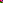

每个人的计算机里都保存着各种各样的文件，有没有想过为什么纯文本文件可以方便地编辑，只需要输入、删除文字即可，而图片则需要使用一些“重量级”的软件才能处理？图片跟纯文本文件有什么区别？
《深入理解计算机系统》第1.7.4节首句话——文件就是字节序列，仅此而已。从这点上看，图片跟纯文本文件可以说没区别。它们之所以表现出这么大的差异性，完全是“位”+“上下文”不同所造成的。先看看一个纯文本文件的十六进制是怎样的，test.txt文件内容如下：
abc
查看文件十六进制数据：
$ xxd test.txt
00000000: 6162 63 abc
至于图片，拿简单的PNG图片为例吧，由于图片的内容有大部分都是不可打印字符，因此，我们换一种方式来制作图片。当然啦，为了呼应标题，并没有调用任何标准库和第三方跟图片处理相关的库，只是简单地使用了原始的字符处理、压缩、CRC函数，让整个过程更“原汁原味”，可以清晰看到PNG的内部构造。以下代码创建了一张宽度和高度均为3像素的PNG图片，每一行的颜色分别是“红绿蓝”、“蓝红绿”、“绿蓝红”。
<?php
function chunk($type, $data): string
{
$chunk = $type. $data;
$crc = crc32(empty($data) ? $type : $chunk);
$ret = pack('N', strlen($data)). $chunk. pack('N', $crc);
return $ret;
}
function createPng(): void
{
// 1. PNG 文件头：
// 89：用于检测传输系统是否支持8位的字符编码，以减少将文本文件被错误识别成 PNG 文件的机会
// 50 4E 47：PNG 每个字母对应的 ASCII 编码
// 0D 0A：DOS 风格的换行
// 1A：DOS 命令行下，用于阻止文件显示的文件结束符
// 0A：Unix 风格的换行符
$header = "\x89PNG\r\n\x1A\n";
// 2. IHDR 块：描述图片宽高和颜色信息的块。依次：4 字节为宽度；4 字节为高度；1 字节为位深度；1 字节为颜色类型；1 字节为压缩方法；1 字节为滤波方法；1 字节为交错方法；4 字节为 CRC 校验（16 进制计算得到）
$chunkType = 'IHDR';
$width = 3;
$height = 3;
$ihdrData = pack('N*', $width, $height) . "\x08\x02\x00\x00\x00"; // 3x3, 8 bits per channel, RGB
$ihdr = chunk($chunkType, $ihdrData);
// 3. IDAT 块：图片的实际像素数据，使用过滤器和 zlib 压缩来编码
$chunkType = 'IDAT';
// 像素数据（白色背景，中心红点）
$filterType = "\x00"; // 过滤器
$pixelData = $filterType. "\xFF\x00\x00". "\x00\xFF\x00". "\x00\x00\xFF".
$filterType. "\x00\x00\xFF". "\xFF\x00\x00". "\x00\xFF\x00".
$filterType. "\x00\xFF\x00". "\x00\x00\xFF". "\xFF\x00\x00";
$compressedData = gzcompress($pixelData);
$idat = chunk($chunkType, $compressedData);
// 4. IEND 块
$chunkType = 'IEND';
$iend = chunk($chunkType, '');
$pngData = $header . $ihdr . $idat . $iend;
file_put_contents('output.png', $pngData);
}
createPng();
边看代码边看解释。一张极为简单的PNG图片由四个部分组成：
| 89 50 4E 47 0D 0A 1A 0A | IHDR | IDAT | IEND |
|---|---|---|---|
| PNG 签名（文件头、魔数） | Image header（图片头） | Image data（图片数据） | Image end（图片尾） |
代码中有更详细的注释。魔数、文件头，让图片软件可以识别文件类型是否合法；图片头，用于设置图片的基本信息，例如宽度、高度、颜色类型等；图片数据，很容易理解了，用于设置图片实际显示的样式；图片尾，标记图片文件的结束。其中的算法和更详细的内容不需要深究，毕竟不是专门搞图片处理的。只需要知道，系统识别一个文件，最基本要有魔数、图片的格式说明，说到底，还是上面提到的“位”和“上下文”。通过“魔数”等上下文，图片软件识别到文件，接着就可以对图片的内容进行解释，从而进一步处理。
可以看到除去一些必要的“上下文”，PNG似乎没有想象中那么神秘可怕，以上代码中的$pixelData就是一个个RGB的像素点，这时候还不是我们想改啥颜色就改啥，就是操作起来有点费手费眼。
可以验证一下图片的十六进制数据是不是就是以上代码输出的：
$ xxd test.png
00000000: 8950 4e47 0d0a 1a0a 0000 000d 4948 4452 .PNG........IHDR
00000010: 0000 0003 0000 0003 0802 0000 00d9 4a22 ..............J"
00000020: e800 0000 1049 4441 5478 9c63 f8cf c0c0 .....IDATx.c....
00000030: 00c7 e81c 0086 9708 f8dd ba56 9200 0000 ...........V....
00000040: 0049 454e 44ae 4260 82 .IEND.B`.
想修改PNG？没问题，依然可以“手工”修改像素来改变图片，例如显示红十字图片，只需要将中间的像素改为红色，周边的像素改为白色。
$pixelData = $filterType. "\xFF\xFF\xFF". "\xFF\x00\x00". "\xFF\xFF\xFF".
$filterType. "\xFF\x00\x00". "\xFF\x00\x00". "\xFF\x00\x00".
$filterType. "\xFF\xFF\xFF". "\xFF\x00\x00". "\xFF\xFF\xFF";
修改前后图片对比如下，由于网页显示尺寸太大，会导致图片失真，但大概也能看出效果，下载图片放大查看会更清蜥。
